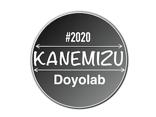

【10月ワーク】
結婚式・披露宴で行われるイベントについてのアンケートを開始
アンケート対象者：既婚・未婚の男女（アンケート内容が若干異なる）
アンケート者数：各５０人（目標）
アンケート内容：
・結婚式・披露宴で行われる演出として自分が実際に行なったもの（複数選択可）
・やってみて一番良かったと思う演出
・やらなきゃ良かったと一番思った演出とその理由
・やりたかったが実際にはしなかった演出とその理由
・あなたにとって結婚とは
目的として、実際に結婚式・披露宴を行う2人が何を重視してその演出を選んだのか知ること
また、ある演出のデメリットの部分を炙り出し、「伝統になりやすさ」を把握すること
結婚披露宴においての演出の数は細かくカテコライズすることは困難なため、
メジャーなものだけを選択肢とし、それ以外はその他の欄に記入してもらう
研究ページのアンケート調査ページに記載
結婚披露宴においての演出に関するアンケートを開始（コレスポンデンス分析）
アンケート対象者：既婚・未婚の男女（アンケート内容は同じ）
アンケート者数：各５０人（目標）
アンケート内容：２３個の演出に関して直感的に回答
コレスポンデンス分析の要素
幻想的
感動的
かわいい
不思議
面白い
楽しい
伝統的
目新しい
オリジナリティ
費用が安そう
費用が高そう
高級感がある
珍しい
爽やか
神秘的
研究ページのアンケート調査ページに記載